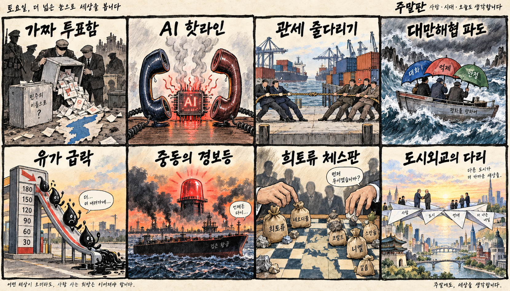
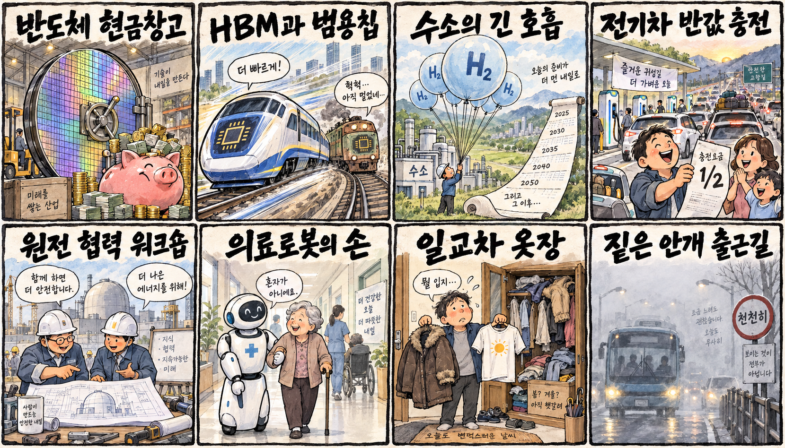

01
메타 · 680.38→741.24달러 · +8.95%
내용요약 시가 대비 8.95% 급등해 AI 개인비서 기대와 대형 플랫폼 위험선호를 반영했습니다.
예상여파 국내 AI 소프트웨어와 플랫폼주 심리에 우호적일 수 있으나 단기 급등 추격은 경계해야 합니다.
MORNING_BRIEFING_20260922
작성 시각: 2026-09-22 06:43 KST · 직전 미국 정규장과 2026-09-22 KST 당일 공개 기사 기준
직전 미국 정규장인 9월 21일 뉴욕증시는 다우 +0.71%, S&P 500 +1.49%, 나스닥 +2.26%로 동반 상승했습니다. AI 열풍이 재점화되며 AMD·메타·사이버보안주가 지수를 이끌었고 국채금리와 유가 하락도 위험선호를 도왔습니다. 한국 증시는 반도체 대형주에 우호적인 출발이 예상되지만 KOSPI 7,000선 돌파 직후인 만큼 갭 상승 추격보다 수급 연속성을 확인해야 합니다.
| 지수 | 종가 | 등락률 | 한국 증시 시사점 |
|---|---|---|---|
| 다우존스 | 52,048.83 | +0.71% | AI·기술주 위험선호, 국내 반도체에 우호적 |
| S&P 500 | 7,764.70 | +1.49% | AI·기술주 위험선호, 국내 반도체에 우호적 |
| 나스닥 종합 | 27,122.09 | +2.26% | AI·기술주 위험선호, 국내 반도체에 우호적 |
AI주 랠리로 사상 최고 흐름을 이어가며 기술주 위험선호가 강했습니다.
AI 컴퓨팅 기대가 반도체 공급망 전반으로 확산했습니다.
전일 +1.65%로 7,000선을 돌파해 오늘은 연속성과 과열을 함께 봅니다.
검증 표본과 수급·손익비 문턱을 모두 통과한 후보가 없습니다.
9월 21일 보고서는 검증 문턱 미충족으로 공식 추천을 내지 않았습니다. 게시 당시 판단을 유지하며 사후 종목을 추가하지 않습니다.
| 시장 | 종가 | 등락률 | 기준 |
|---|---|---|---|
| KOSPI | 7,007.72 | +1.65% | 9월 21일 · 시가 대비 +1.00% |
| KOSDAQ | 836.27 | +1.11% | 9월 21일 · 시가 대비 +0.67% |
| 다우존스 | 52,048.83 | +0.71% | 미국 9월 21일 정규장 |
| S&P 500 | 7,764.70 | +1.49% | 미국 9월 21일 정규장 |
| 나스닥 종합 | 27,122.09 | +2.26% | 미국 9월 21일 정규장 |
메타가 시가 대비 8.95% 상승하며 대형 기술주를 주도했습니다.
크라우드스트라이크가 시가 대비 7.65% 올랐습니다.
AMD +5.41%, 인텔 +4.45%, 엔비디아 +1.99%였습니다.
엑슨모빌 -1.65%, 캐터필러 -1.27%로 약했습니다.
내용요약 시가 대비 8.95% 급등해 AI 개인비서 기대와 대형 플랫폼 위험선호를 반영했습니다.
예상여파 국내 AI 소프트웨어와 플랫폼주 심리에 우호적일 수 있으나 단기 급등 추격은 경계해야 합니다.
내용요약 시가 대비 7.65% 올라 사이버보안 성장주가 강한 반등을 보였습니다.
예상여파 AI 보안 투자 기대가 확산할 수 있지만 높은 밸류에이션 변동성을 고려해야 합니다.
내용요약 시가 대비 5.41% 상승하며 시가총액 1조 달러 돌파 보도가 나왔습니다.
예상여파 국내 HBM·서버 메모리에는 긍정적이지만 장전 갭 상승 시 추격 위험이 큽니다.
내용요약 국제유가 하락과 함께 시가 대비 1.65% 내려 에너지주가 약했습니다.
예상여파 정유·화학 원가에는 일부 우호적이지만 수요 둔화 신호인지 구분해야 합니다.
내용요약 시가 대비 1.27% 하락해 기술주 강세와 달리 산업재는 약세였습니다.
예상여파 위험선호가 AI에 집중된 만큼 경기민감주의 상대 약세가 이어지는지 살펴야 합니다.
직전 거래일 KOSPI는 7,007.72로 전일 종가 대비 +1.65% 올랐고, 시가 대비로는 +1.00%였습니다. 미국 나스닥 +2.26%와 AMD·엔비디아 강세는 삼성전자·SK하이닉스와 AI 인프라에 우호적입니다. 다만 KOSPI가 7,000선을 돌파한 직후라 장 초반 갭이 커지면 추격보다 외국인 현물·선물 동반 수급과 7,000선 지지 여부를 우선 확인합니다.
오늘은 추천 없음 — 현금 관망
보고서 작성 시각은 장 개시 전입니다. 전일까지의 외국인·기관 수급, 최신 컨센서스 변화, 30건 이상 유사 조건 보정 확률, 예상 손익비 1.5 이상을 동시에 검증한 종목이 없어 점수와 상승확률을 임의로 만들지 않습니다.
관심 연결종목 고용량 메모리·반도체 인프라·전력망은 개장 후 관찰 대상일 뿐 매수 추천이 아닙니다. 직전 급등 종목과 과도한 갭 상승 종목은 추격매수하지 않습니다.
정상회담 전 관세 유예와 희토류 협상의 구체적 진전을 봅니다.
장 초반 현물·선물 동반 매수와 원·달러 방향을 확인합니다.
AMD·엔비디아 강세가 국내 메모리와 장비주로 이어지는지 봅니다.
돌파 다음 날 지지 여부와 과도한 갭 상승 종목의 되밀림을 확인합니다.
핵심 요약: AI 랠리가 AMD의 시가총액 1조 달러 돌파와 데이터센터 냉각·파운드리 증설로 확장했습니다. 기술 속도 경쟁이 거세지는 동시에 자율 규제와 안전 책임의 경계가 핵심 정책 이슈로 떠올랐습니다.
내용요약 LG전자가 AI 데이터센터 열관리 수요에 대응해 냉각 포트폴리오를 확대한다는 당일 보도입니다.
예상여파 고밀도 서버 확산으로 칩 성능뿐 아니라 액체냉각·공조와 전력 효율이 데이터센터 투자 경쟁력의 핵심으로 부상할 수 있습니다.
내용요약 AMD가 AI 컴퓨팅 기대 속 미국 반도체 기업 네 번째로 시가총액 1조 달러를 돌파했다는 당일 보도입니다.
예상여파 AI 가속기 경쟁이 엔비디아 독주에서 다변화되며 서버·고대역폭 메모리 공급망 전반의 투자 기대를 높일 수 있습니다.
내용요약 골드만삭스가 한국 반도체 업계의 내년 순현금과 국내총생산 기여 확대를 전망했다는 당일 보도입니다.
예상여파 메모리 호황의 현금창출력이 설비투자와 주주환원으로 이어질지, 공급 증가가 가격을 훼손하지 않을지가 관건입니다.
내용요약 삼성전자가 AI 반도체 수요에 대응해 4나노 파운드리 증설을 준비한다는 당일 보도입니다.
예상여파 선단공정 가동률 개선에는 긍정적이지만 고객 확보와 수율, 투자비 회수 속도를 함께 확인해야 합니다.
내용요약 미국 정부가 AI 위험 대응을 기업 자율에 맡기는 방향을 강조했다는 당일 보도입니다.
예상여파 안전 규제 강도가 낮아지면 개발 속도는 빨라질 수 있으나 사고 책임과 국제 표준을 둘러싼 논쟁도 커질 수 있습니다.
핵심 요약: 우크라이나 점령지 선거 논란이 이어지는 가운데 미중은 AI 위험 핫라인과 무역 휴전 연장을 동시에 조율하고 있습니다. 한미일 안보 공조와 유가 급락은 지정학·시장에 서로 다른 신호를 보냅니다.
내용요약 영국·캐나다·호주 등 5개국이 러시아의 우크라이나 점령지 선거를 가짜 선거로 규정했다는 당일 보도입니다.
예상여파 선거 정당성 논쟁이 점령지 인정 문제와 추가 제재, 향후 종전 협상의 영토 조건을 더욱 복잡하게 만들 수 있습니다.
내용요약 미중이 AI 위험 핫라인에 합의했지만 미국이 기술 감속론에는 선을 그었다는 당일 보도입니다.
예상여파 위기 소통 장치는 오판 위험을 낮출 수 있으나 반도체 통제와 AI 개발 속도 경쟁은 계속될 가능성이 큽니다.
내용요약 미중 정상회담을 앞두고 무역 휴전 연장 기간을 두고 양국이 줄다리기 중이라는 당일 보도입니다.
예상여파 관세 유예 기간과 희토류 협상 결과가 아시아 수출주·환율·원자재 가격의 단기 변동성을 좌우할 수 있습니다.
내용요약 한미일 외교장관이 대만해협의 평화와 안정, 북한의 대화 복귀 필요성을 재확인했다는 당일 보도입니다.
예상여파 동북아 안보 공조 강화는 방산·해운 리스크 프리미엄과 중국과의 외교 균형에 영향을 줄 수 있습니다.
내용요약 국제유가가 전일 대비 4.5% 하락해 WTI가 배럴당 95달러대로 내려왔다는 당일 보도입니다.
예상여파 에너지 비용 부담은 완화될 수 있지만 급락 배경이 수요 둔화라면 경기민감 자산에는 엇갈린 신호입니다.

핵심 요약: 반도체 현금창출 기대가 커지는 한편 수소·원전·전기차 충전 정책은 사업화와 생활 체감의 실행력을 시험받고 있습니다. 오늘은 큰 일교차와 내륙 안개에 따른 출근길 안전도 중요합니다.
내용요약 골드만삭스가 삼성전자·SK하이닉스의 현금창출 증가와 한국 경제 기여 확대를 전망했다는 당일 보도입니다.
예상여파 반도체 대형주의 투자·배당 여력은 커질 수 있지만 메모리 가격과 설비투자 주기의 지속성을 확인해야 합니다.
내용요약 수소산업 현장에서 사업화 어려움과 일관된 정책 필요성을 제기했다는 당일 보도입니다.
예상여파 보조금·인프라·장기 구매계약의 예측 가능성이 수소 프로젝트의 금융조달과 상용화 속도를 가를 수 있습니다.
내용요약 추석 연휴를 앞두고 전기차 공공충전기 요금을 50% 할인한다는 당일 보도입니다.
예상여파 연휴 이동 비용을 낮추고 충전 수요를 늘릴 수 있어 혼잡 관리와 설비 가동률이 정책 체감도를 좌우합니다.
내용요약 원전 도입을 추진하는 케냐와 한국이 원자력 에너지 협력 워크숍을 연다는 당일 보도입니다.
예상여파 해외 원전 협력이 설계·운영·인력양성 수출로 이어질지 후속 정부 간 합의와 사업 조건을 봐야 합니다.
내용요약 전국이 대체로 맑지만 낮과 밤의 기온차가 크고 내륙에 짙은 안개가 예상된다는 당일 기상 보도입니다.
예상여파 출근길 교통안전과 건강관리가 필요하며 낮에는 최고 31도 안팎까지 올라 체감 변화가 크겠습니다.
